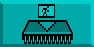
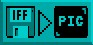
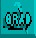
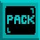
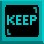
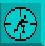

When you are happy with the rectangle of graphics to be grabbed, click on the left button again. The Edit Screen now holds your new image. There is an auto-resolution mode that is explained later, which will ensure that the best graphics mode is used.
Put Object

This works in the same way as the [Put Object To] option in the Bank menu. It
allows you to grab an image and put it into memory instantly, without having to
wander from one menu to another.
Load Picture

This time, when the file selector appears, you will be reminded to save any current
image in the editing area that has not been saved to the Object bank. Then the
name of a new picture to load may be selected.
Grab Palette

This is an on/off option that is toggled by a mouse click. If it is on, the current palette will
automatically change to the palette used by the current picture. If it is off, no change to
the palette will be made.
Re-load Picture
This icon is linked to the next two icons, and the three of them act like radio station
selectors. In other words, only one can be pushed in at a time, and when any one is
activated, the other two will click off. With [Re-load Picture], the graphic image is
completely erased when you return to the Main Menu, allowing you to create more Objects.
This is useful if you do not have much memory available, and a large IFF screen may be using a vast amount of it.
Pack Picture

This is also a memory saver. It takes the current screen picture, and packs it into a
memory bank using "fast RAM", which does not consume display memory. When you
leave the Grabber menu for the first time, this will take a little while to perform, as
AMOS professional searches for the most efficient way to save memory.
Keep Screen

This option keeps the entire screen exactly as it is, providing you have enough memory available in "chip RAM".
The Hot Spot

The next menu concerns setting up any hot spots for Objects. In most computer games
and in several types of practical programs, hot spots can be set up inside moving images
as coordinate reference points. When these coordinates are recognised, they are used to
trigger pre-set reactions. Because Objects can vary greatly in size, it is very useful to be able to
place a hot spot precisely. Once inside the Hot Spot menu, you can go straight into the Zoom or
Edit Window and use the mouse to place and set the coordinates.